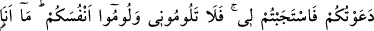
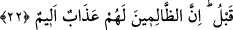
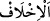

22. (Hesapları görülüp) iş bitirilince şeytan diyecek ki: “Şüphesiz Allah size
gerçek olanı vaadetti, ben de size vaat ettim, ama size yalancı çıktım. Zâten benim
size karşı bir gücüm yoktu. Ben, sâdece sizi (inkâra) çağırdım, siz de benim
dâvetime hemen koştunuz. O halde beni yermeyin, kendinizi yerin. Ne ben sizi
kurtarabilirim, ne de siz beni kurtarabilirsiniz. Şüphesiz daha önce ben, beni
(Allah’a) ortak koşmanızı reddettim.” Şüphesiz zâlimler için elem verici bir azab
vardır.
“(Hesapları görülüp) iş bitirilince” yâni hesapla alâkalı hükümler bitirilip
cennetlikler cennete, cehennemlikler de cehenneme girdikten sonra ya da saâdet ehline
saâdet, şakavet ehline de şakavet emredildikten sonra... Hem zayıfarı hem de büyüklük
taslayanları saptıran “şeytan diyecek ki:”
Kâşifî şöyle der: “Cehennemliklerin tamamı toplanırlar. İblis’i suçlarlar. İblis ateşten
bir minber üzerinde yukarı çıkar. İnsanların şakîlerine şöyle der:
“–Ey beni suçlayanlar:” “Şüphesiz Allah size gerçek olanı vaadetti” yâni haşr ve
cezânın olacağına dâir Allah’ın vaadi doğru ve gerçektir. İşte şimdi size vaadettiklerini
tam olarak yerine getirdi “ben de size vaadettim.” Boş bir vaadde bulundum. Bu vaad,
yeniden dirilme ve hesâba çekilmenin olmayacağıydı. Olsa bile putlar size şefâat
edecekti. “Ama” verdiğim sözde “size yalancı çıktım.”
“__WORD__el-İhlâf”, aslında sözünü yerine getirme gücü olan birinin bu sözü yerine
getirmemesi demektir. Oysa şeytanın zâten böyle bir gücü yoktur. Dolayısıyla
‘caydım/size yalancı çıktım’ ifâdesi mecâz olmaktadır. Şeytanın yaptığı vaadin boş
olduğunun ortaya çıkması, verdiği bu sözü yerine getirecek bir gücü varmış da sözünden
caymış gibi anlatılmıştır. Oysa şeytan kim, böyle bir güce sâhip olmak kim! Hulâsa
şeytan şöyle demiş oluyor: ‘Size yalan söylediğim, bugün tamâmen açığa çıkmış
bulunuyor.’
“Zâten benim size karşı” sizi küfre ve mâsıyete zorlayacak “bir gücüm” tasallut ve
hakimiyetim de “yoktu.”
Bahru’l-ulûm’da şöyle der: “Bir kimse: “Şeytanın bu sözü, Cenab-ı Hakk’ın: “Onun
hâkimiyeti, ancak onu dost edinenleredir.” (en-Nahl, 16/100) âyetine ters
düşmektedir. Böyle bir durumda yalan söylemesine imkân olmadığına göre şeytanın bu
sözünü doğru mu kabûl edeceğiz yalan mı?” diyebilir.
Fakir (Bursevî) der ki: Bu sorunun cevabı şöyledir: Kahır ve galebe anlamında bir
hâkimiyetin bulunmaması, dâvet etme ve süslü gösterme anlamında bir gücün